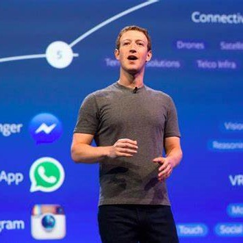

persistence
Your way to greatnnes
This website shows you how to become great and successfull
introduction
Mark Elliot Zuckerberg ( born May 14, 1984) is an American businessman. He co-founded the social media service Facebook and its parent company Meta Platforms (formerly Facebook, Inc.), of which he is chairman, chief executive officer and controlling shareholder. Zuckerberg has been the subject of multiple lawsuits regarding the creation and ownership of the website as well as issues of user privacy. Zuckerberg briefly attended Harvard University, where he launched Facebook in February 2004 with his roommates Eduardo Saverin, Andrew McCollum, Dustin Moskovitz and Chris Hughes. Zuckerberg took the company public in May 2012 with majority shares. In 2008, at age 23, he became the world's youngest self-made billionaire. He has since used his funds to organize multiple donations, including the establishment of the Chan Zuckerberg Initiative. His net worth as of June 13, 2024 is USD $176 billion, making him the fourth richest person in the world, behind Elon Musk, Bernard Arnault, and Jeff Bezos.
Early life
Mark Elliot Zuckerberg was born on May 14, 1984, in White Plains, New York to psychiatrist Karen (née Kempner) and dentist Edward Zuckerberg. He and his three sisters (Arielle, Randi, and Donna) were raised in a Reform Jewish household in Dobbs Ferry, New York. His great-grandparents were emigrants from Austria, Germany, and Poland. zuckerberg initially attended Ardsley High School before transferring to Phillips Exeter Academy. He was captain of the fencing team. Zuckerberg began using computers and writing software in middle school. In high school, he built a program that allowed all the computers between his house and his father's dental office to communicate with each other. During Zuckerberg's high-school years, he worked to build a music player called the Synapse Media Player. The device used machine learning to learn the user's listening habits, which was posted to Slashdot and received a rating of 3 out of 5 from PC Magazine. The New Yorker once said of Zuckerberg: "some kids played computer games. Mark created them". While still in high school, he attended Mercy College taking a graduate computer course on Thursday evenings
.
Education
The New Yorker noted that by the time Zuckerberg began classes at Harvard in 2002, he had already achieved a "reputation as a programming prodigy". He studied psychology and computer science, resided in Kirkland House, and belonged to Alpha Epsilon Pi. In his second year, he wrote a program that he called CourseMatch, which allowed users to make class selection decisions based on the choices of other students and help them form study groups. Later, he created a different program he initially called Facemash that let students select the best-looking person from a choice of photos. Arie Hasit, Zuckerberg's roommate at the time, explained ,We had books called Face Books, which included the names and pictures of everyone who lived in the student dorms. At first, he built a site and placed two pictures or pictures of two males and two females. Visitors to the site had to choose who was "hotter" and according to the votes there would be a ranking. The site went up over a weekend, but by Monday morning, the college shut it down, because its popularity had overwhelmed one of Harvard's network switches preventing students from accessing the Internet. In addition, many students complained that their photos were being used without permission. Zuckerberg apologized publicly, and the student paper ran articles stating that his site was "completely improper".

Personal life
Zuckerberg met fellow Harvard student Priscilla Chan at a frat party during his sophomore year with whom he began dating in 2003. In September 2010, Chan, who was a medical student at the University of California, San Francisco at the time, moved into his rented house in Palo Alto, California. They married on May 19, 2012, in the grounds of his mansion in an event that also celebrated her graduation from medical school. Zuckerberg revealed on July 31, 2015, that they were expecting a baby girl and that Chan had previously experienced three miscarriages. Their daughter, Maxima Chan Zuckerberg, was born on December 1, 2015. They announced in a Chinese New Year video that their daughter's Chinese name is Chen Mingyu (Chinese: 陈明宇). Their second daughter, August, was born in August 2017. Zuckerberg and his wife welcomed their third daughter Aurelia on March 24, 2023, and announced the news across his social media pages. The couple also have a Puli dog named Beast, who has over two million followers on Facebook.In 2022, Zuckerberg took up training in both mixed martial arts (MMA) and Brazilian jiu-jitsu (BJJ), and has been open about his love for the two sports. He competed in a BJJ tournament on May 6, 2023, and won both a silver and gold medal in gi and no gi, competing at white belt. In July 2023, he was promoted to blue belt in Brazilian jiu-jitsu by Dave Camarillo. Four months later, Zuckerberg announced that he was preparing to make his MMA debut but had suffered an anterior cruciate ligament injury in training that required surgery and had delayed this.In January 2017, Zuckerberg criticized Donald Trump's executive order to severely limit immigrants and refugees from some countries. He also funded a state-level ballot initiative for the 2020 general election that would raise taxes by altering California's Proposition 13 to require the tax assessment of commercial and industrial properties in the state at market rate.
Career
1990s Ventured into basic programming and software development, and undertakes courses and tutorials on the subject matter. 2002 Enrols at Harvard to study psychology and computer science. 2003 Develops Coursematch – a software that allows students to select classes based on the choices of their peers. Also develops Facemash, a controversial program that lets students select the best-looking person from a choice of photos. 2004 Launched thefacebook.com on the 4th of February 2004. It quickly becomes popular amongst Harvard students and subsequently spreads to other college campuses. 2004 Two Harvard seniors, Cameron and Tyler Winklevoss accuse Zuckerberg of stealing the idea for Facebook from them. The matter goes to court. 2004 Zuckerberg drops out of Harvard and moves to Palo Alto to focus on growing Facebook. 2005 Company changes name to Facebook.com2007 Becomes the world’s youngest self-made billionaire at the age of 23. 2008 The Winklevoss twins’ lawsuit is eventually settled with both awarded 1.2 million Facebook shares and $20 million cash. 2010 Zuckerberg donates $100 million to the Newark public school system. 2010 The Social Network, a film that chronicles Zuckerberg’s Harvard days and his founding of Facebook, is released 2010 Signs the Giving Pledge, promising to give half of his wealth to charity. 2012 April Facebook purchases Instagram in a deal worth $1 billion. 2012 MayFacebook embarks on its IPO and raises $16 billion, the 3rd largest in U.S. history.2012 Ties the knot with college sweetheart, Priscilla Chan, on the 19th of May 2012.2013 Launches Internet.org, an initiative that is aimed at ensuring that every human being on earth has internet access. 2014 Facebook acquires WhatsApp Messenger in a deal worth $19.3 billion .2014 Facebook purchases Oculus (virtual reality hardware and software manufacturer) in a deal worth $2.3 billion. 2015 He and his wife announce the birth of their first child, Max. They also use the opportunity to announce the creation of their non-profit, Chan Zuckerberg Initiative, and disclose that they would give 99% of their Facebook shares to the organization. 2017 May Receives honorary PhD from Harvard.2017 Welcomes second child,. 2018 Facebook is fingered in a huge personal data breach scandal involving political consulting firm, Cambridge Analytica. Zuckerberg is compelled to testify before the Senate committee on commerce, science and transport. 2019 Zuckerberg reveals that Facebook is dedicated to promoting free speech, a move that angers many who feel that there is need for more regulation on the network. 2020 Visits Europe and indicates that he would welcome increased government regulation of Big Tech companies.
